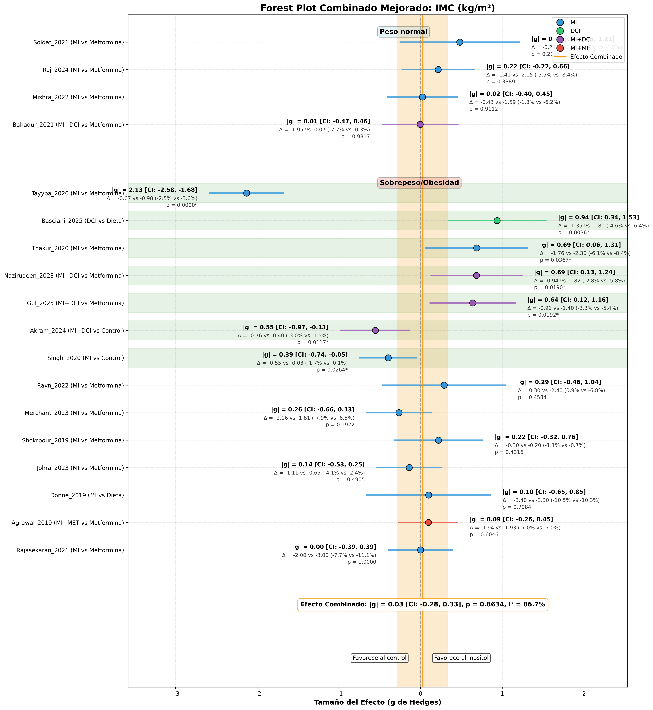

Enhanced Forest Plot with Improved Spacing and Absolute Values
✅ Key Improvements Implemented:
- Absolute Hedges' g values (|g|): Effect sizes now show as positive values for better interpretation
- Improved vertical spacing: Better separation between 'Peso normal' and 'Sobrepeso/Obesidad' groups
- Clear group headers: Visual separation with colored background headers
- Preserved change direction signs: Δ (change) values maintain their signs for correct interpretation
- Enhanced text positioning: Annotations positioned to avoid overlap and improve readability
- Publication-ready appearance: Larger figure size and professional formatting

Forest plot showing BMI data with enhanced visualization: clear group separation, absolute effect sizes, and preserved directional information in change values.